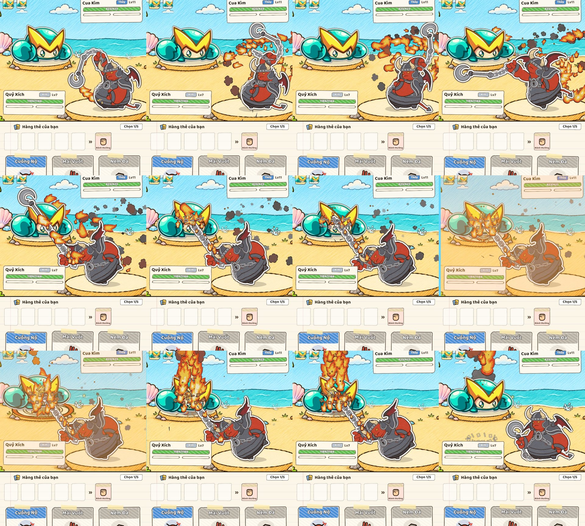
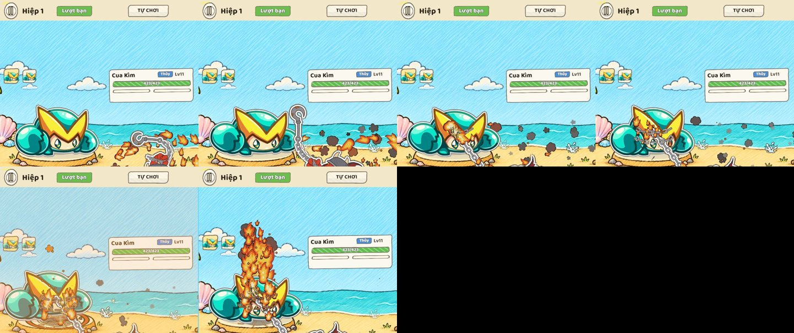
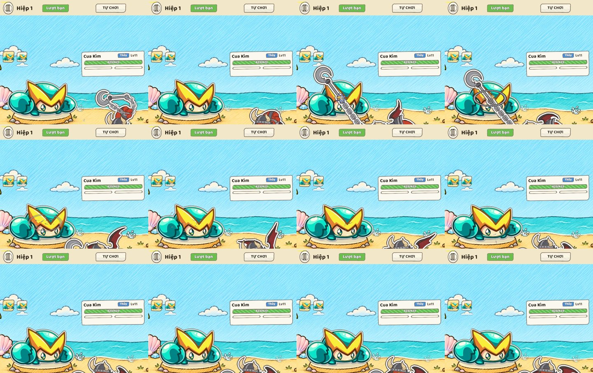
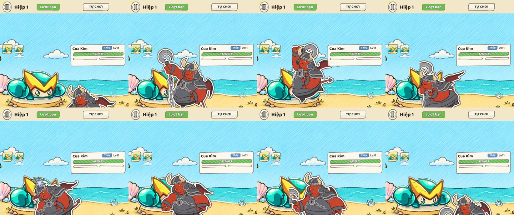

Quỷ Xích (suất khien_bac, ải 20 đảo Kim) — ảnh chụp trong trận (tour PokiClash/Thử/Đảo Kim: riêng Quỷ Xích)

Chiêu cuối dạng 2 (số = khung chụp, ~0,095 s): móc quay để lại vệt lửa + khói (5, 8), ném: lửa chạy dọc xích (10, 12), vòng xích quấn đối thủ cháy (14, 16), chớp chiêu cuối (18), vòng lửa dưới đất (21), CỘT LỬA vọt khỏi mép trên màn (24, 28), thả (34). Khung 34: mắt xích rơi quá xa (xuống tận chân Quỷ Xích) — đã sửa cho rơi xuống đất dưới chân đối thủ, chưa chụp lại.

Chiêu cuối dạng 1 (bản nhẹ: cột lửa thấp hơn, ít lửa hơn)

Chiêu mana dạng 2: quay xích, ném móc (móc + xích bay là mảnh của rig, game lái tới đối thủ), móc găm: chớp + vòng sóng, giật về

Đánh thường dạng 2: bay tới, giơ móc, bổ xuống: chớp sắt ở đỉnh đầu đối thủ, bụi